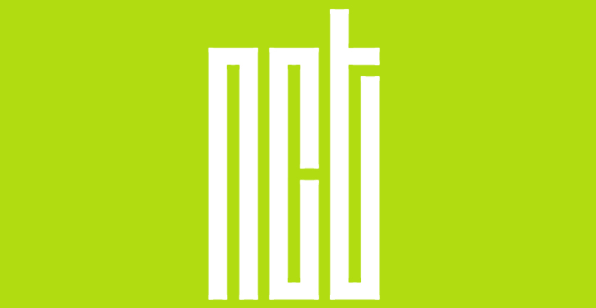

Neo Culture Technology

NCT取自「Neo Culture Technology（新文化技術）」的首字母，
象徵著NCT是一組以全世界為舞台，具有開放性跟擴張性，成員無上限的組合。
NCT的官方應援顏色為珍珠Neo香檳色（Pearl Neo Champagne）
偶像應援手燈的用意，除了是在演唱會或活動上支持自己的偶像外，
也漸漸變成一個團體的象徵。 NCT官方應援手燈，正式在5月8日
於〈NCT 2018 FAN PARTY 『SPRING』〉上發表。
有別於SM娛樂旗下藝人的應援棒，NCT官方應援手燈是立體四方型的，
四邊都印著「NCT」英文字，並以珍珠Neo香檳色做主色，搭配白色的手柄。
NCT的粉絲名為「NCTzen」。由於團名音似「N City」，
此粉絲名便取自音似「N Citizen」，彷彿NCT是「N City」的市長，
而粉絲們則代表這座城裡的市民們。由於「NCTzen」有點長，
同時也著另一個外號「C-ZEN」，聽起來像是四季的英文（SEASON），
有著粉絲彷彿是四季一樣這麼無可取代的意思。該名首次於2017年6月12日
的V APP直播中公佈，並由當時現有的NCT所有分隊成員共同決定。